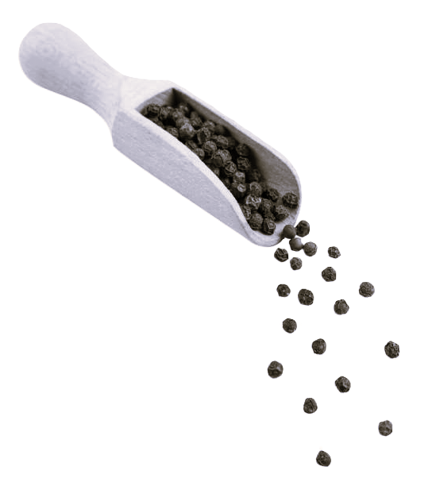

Nutmeg:
The Aromatic Jewel of Idukki's High Ranges
The lush high ranges of Idukki are renowned for producing premium-quality nutmeg. Cultivated amidst the misty hills, our nutmeg is cherished for its warm, nutty aroma and robust flavor. Grown in the nutrient-rich soils of this elevated region, it boasts superior essential oil content and unmatched freshness. Perfect for enhancing sweet and savory dishes, the nutmeg from Idukki truly stands out as a culinary gem, celebrated by chefs and spice connoisseurs alike.
